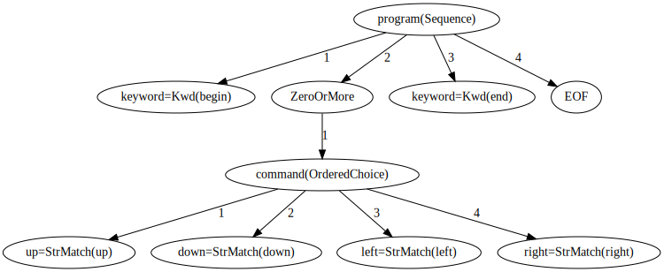
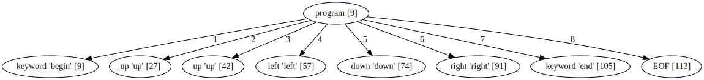
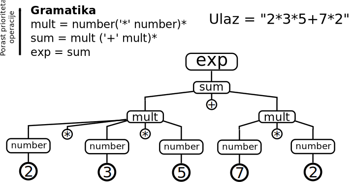

Arpeggio parser


Fakultet tehničkih nauka u Novom Sadu
Katedra za informatiku
Sadržaj
- Kratak pregled Python parsera
- PyParsing
- parsimonius
- PLY
- Arpeggio
Kratak pregled Python parsera
PyParsing
- 100% Python
- MIT licenca
- PEG parser
- Gramatika se zadaje Python izrazima preko redefinisanih operatora + i |
- Mane
- Slabija podrška za semantičku analizu
- Performanse kod gramatika sa vraćanjem (backtracking)
- Nije moguće definisati gramatiku putem PEG notacije
- http://pyparsing.wikispaces.com/
Primer
from pyparsing import Word, alphas
greet = Word( alphas ) + "," + Word( alphas ) + "!" # <-- grammar
hello = "Hello, World!"
print (hello, "->", greet.parseString( hello ))
Hello, World! -> ['Hello', ',', 'World', '!']
parsimonious
parsimonious
- 100% Python
- Projekat otvorenog koda.
- PEG (packrat) parser
- MIT licenca
- Cilj - performanse
- Gramatika se zadaje tekstulanim jezikom.
- Whitespace karakteri se zadaju gramatikom.
Primer
>>> from parsimonious.grammar import Grammar
>>> grammar = Grammar(
... """
... bold_text = bold_open text bold_close
... text = ~"[A-Z 0-9]*"i
... bold_open = "(("
... bold_close = "))"
... """)
>>> print grammar.parse('((bold stuff))')
<Node called "bold_text" matching "((bold stuff))">
<Node called "bold_open" matching "((">
<RegexNode called "text" matching "bold stuff">
<Node called "bold_close" matching "))">
PLY
- 100% Python
- LR parser
- Inspirisan sa lex/yacc alatima
- Pravila prioriteta, oporavak od grešaka, podrška za neodređene gramatike.
- Tokenizacija kao poseban korak (lex modul)
- Gramatika se piše u docstring-ovima za semantičke akcije.
Primer
# When parsing starts, try to make a "chemical_equation" because it's
# the name on left-hand side of the first p_* function definition.
def p_species_list(p):
"chemical_equation : chemical_equation species"
p[0] = p[1] + [p[2]]
def p_species(p):
"chemical_equation : species"
p[0] = [p[1]]
Arpeggio
Osnovne osobine
- 100% Python kod
- MIT licenca
- Definisanje gramatike putem Python izraza ili putem PEG notacije
- Puna podrška za semantičku analizu
- Dobra podrška za debagovanje
- Vizualizacija stabla parsiranja i modela parsera upotrebom GraphViz biblioteke.
- Dobra prijava grešaka
- Mogućnost višestruke analize istog stabla parsiranja
- https://github.com/igordejanovic/arpeggio/
PEG pravila
- Gramatika se zadaje skupom PEG pravila
- Svako pravilo definiše način prepoznavanja određenog (ne)terminala na ulazu.
PEG pravila (2)
Ako su e, e1 i e2 PEG pravila definisani su sledeći elementarni PEG izrazi:
- Sekvenca: e1 e2 - izraz će dovesti do prepoznavanja ulaza ako i samo ako redom izrazi e1 i e2 prepoznaju ulaz
- Uređeni izbor: e1 / e2 - izraz će biti prepoznat ukoliko bilo izraz e1 ili izraz e2 dovedu do prepoznavanja u navedenom redosledu (prvo e1 pa zatim e2 )
- Jedan ili više: e+ - sukcesivno se vrši prepoznavanje izraza e dok god uspeva. Ukoliko je e prepoznat bar jednom prepoznavanje je uspešno
- Nula ili više: e* - sukcesivno se vrši prepoznavanje izraza e dok god uspeva. Izraz uvek uspeva pri čemu ako izraz e nije prepoznat ni jednom rezultat je prazan string,
- Opciono: e? - izraz uvek uspeva. Ukoliko se prepozna string sa ulaza biće konzumiran.
PEG pravila - predikati
Predikati su pravila koja prepoznaju string sa ulaza ali ga ne konzumiraju.
- "I" predikat: &e - pravilo je uspešno samo ukoliko je e prepoznato na ulazu.
- "Ne" predikat: !e - pravilo je uspešno samo ukoliko e nije prepoznato na ulazu.
Koncepti
- Parser model - opisuje određenu vrstu dijagrama stanja-prelaza parsera. Može se vizualizovati upotrebom dot alata u cilju debagovanja.
- Stablo parsiranja - može se vizualizovati dot alatom
- Semantičke akcije - transformišu stablo parsiranja u drugi oblik upotrebom Visitor obrasca.
Definisanje gramatike - interni DSL
def program(): return Kwd('begin'), ZeroOrMore(command),
Kwd('end'), EOF
def command(): return [up, down, left, right]
def up(): return 'up'
def down(): return 'down'
def left(): return 'left'
def right(): return 'right'
- Gramatička pravila → Python funkcije
- Sekvenca → n-torka (tuple)
- Uređeni izbor → Python lista
- Ostalo → instance klasa (npr.
ZeroOrMore, OneOrMore, Optional)
Navedena gramatika prepoznaje ulaz oblika:
begin
up
up
left
down
right
end
Definisanje gramatike - eksterni DSL
program = 'begin' (command)* 'end' EOF
command = UP/DOWN/LEFT/RIGHT
UP = 'up'
DOWN = 'down'
LEFT = 'left'
RIGHT = 'right'
Model parsera
Stablo parsiranja
Elementi stabla su terminali i neterminali.
Iz dokumentacije
Semantičke akcije - transformacija u ASG
class CalcVisitor(PTNodeVisitor):
def visit_number(self, node, children):
"""
Converts node value to float.
"""
if self.debug:
print("Converting {}.".format(node.value))
return float(node.value)
def visit_factor(self, node, children):
"""
Applies a sign to the expression or number.
"""
if self.debug:
print("Factor {}".format(children))
if len(children) == 1:
return children[0]
sign = -1 if children[0] == '-' else 1
return sign * children[-1]
Semantičke akcije - transformacija u ASG (2)
from arpeggio ParserPython, visit_parse_tree
parser = ParserPython(calc)
input_expr = "-(4-1)*5+(2+4.67)+5.89/(.2+7)"
parse_tree = parser.parse(input_expr)
result = visit_parse_tree(parse_tree, CalcVisitor())
Primer - robot
Zadaci
- Proširiti robot primer tako da svaka komanda može definisati broj koraka koliko će robot preći u zadatom pravcu
begin
up 5
left 3
down
up 2
end
begin
init 5, 6
...
Primer - calc
Prioritet i asocijativnost operatora
- U gramatici prepoznavati prvo operatore nižeg pa onda višeg prioriteta.
- Asocijativnost se može rešiti kroz semantičke akcije.
Zadatak
- Dodati operator stepenovanja
2+56^2^3/(43-32)